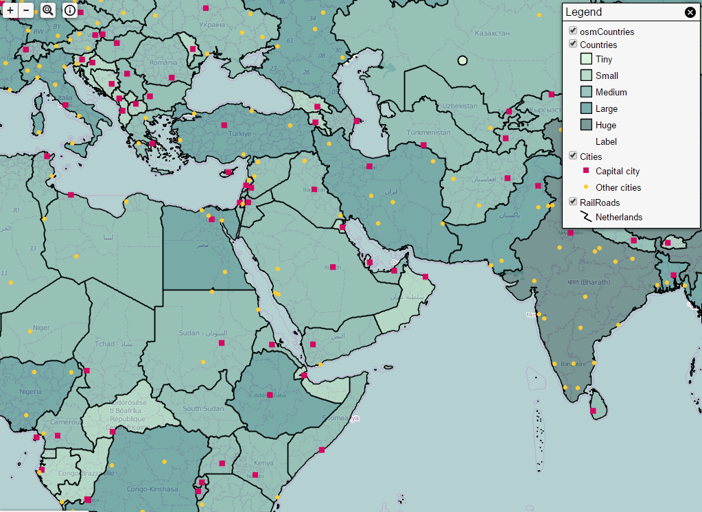

Geomajas Quickstart¶
Geomajas itself is an application framework allowing you to build very diverse and advanced web GIS solutions.
On this OSGeo Live DVD we have included a ready-to-use Geomajas Application. This application features a map, navigation controllers, several data layers, a ribbon toolbar with GIS tools and the Layer Tree.
{kind=link}
Contents
Start Geomajas¶
From the Desktop, select . Wait for Geomajas to open in a browser window.
Alternatively, you can then access the application using the following URL: http://localhost:8080/geomajas/.

Suggerimento
When you’re finished using the application, select .
Navigating the map¶

You can drag the map with your mouse so that the desired area is centered on your screen.
To get a closer look, you can either use the mousewheel to zoom in or use the provided zoom-buttons in the upper left of the application.
You can also select an area to display by clicking the magnifier icon and selecting the desired area (via rectangular select).
Understanding the legend¶

In the upper right, a toggleable legend box is provided. This legend gives you an overview of all the layers currently loaded into the application, with the option to turn them on or off. This also shows more detailed information about each layer regarding icons and colouring.
Gathering information¶
Geomajas applications have the ability to display a variety of information within the layers. Clicking on the map will display the related information if available. Click the info icon in the upper left to toggle between basic or more detailed information.
Things to try¶
If you want to use this sample application to build and customize your own Web GIS solution, visit http://www.geomajas.org/client-gwt. The download page always features the latest and greatest sample applications, documentation, tips and tricks to roll-your-own.
What next?¶
Interested in learning more about Geomajas? The following links provide more information: